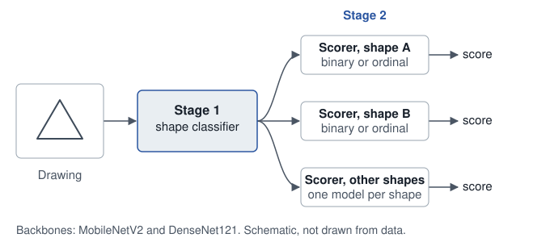

Completed project
Automatic scoring of BOT-2 drawing tasks
The BOT-2 motor proficiency test includes drawing items that examiners score by hand. I built a two-stage pipeline: one CNN identifies which shape was drawn, then a model trained only on that shape predicts the score an expert would give.
- Methods
- MobileNetV2 and DenseNet121; shape-specific binary and ordinal scoring models
- Results
- 99% shape-classification accuracy; over 83% average scoring accuracy